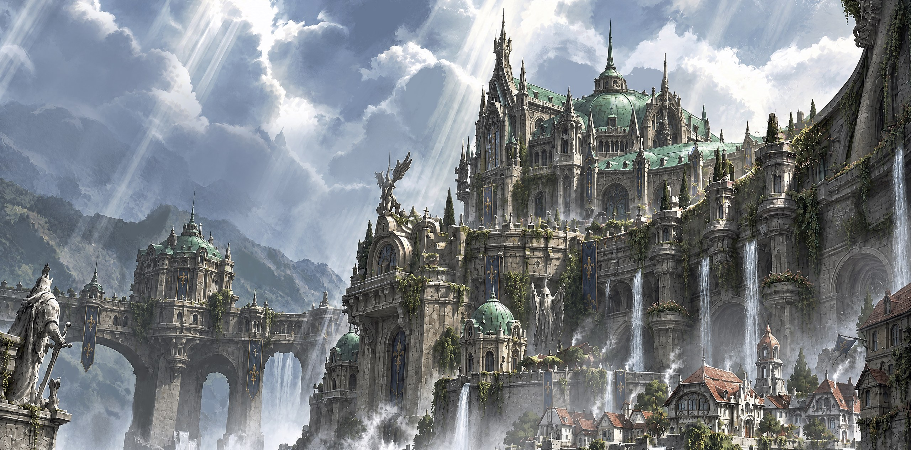
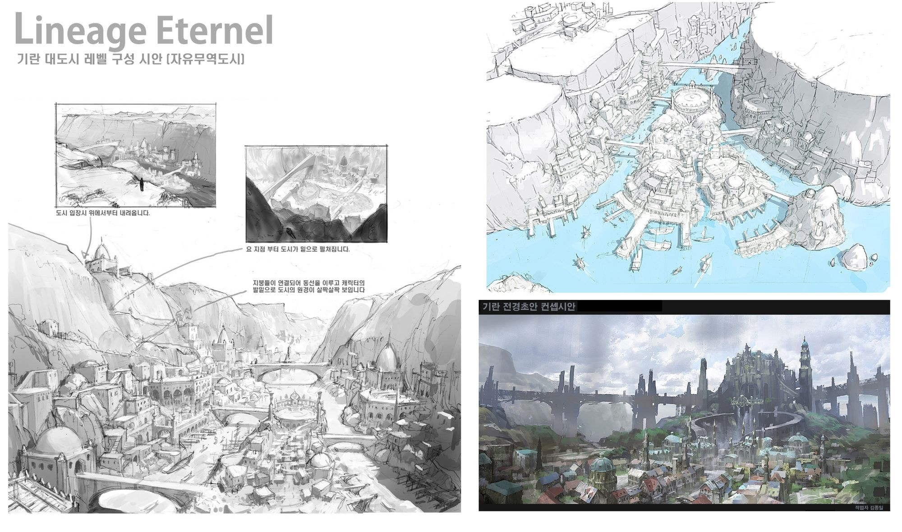
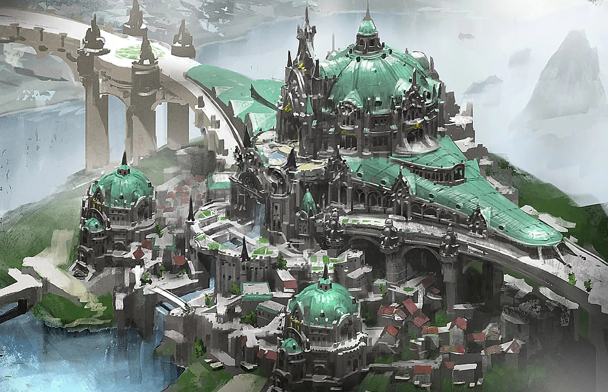
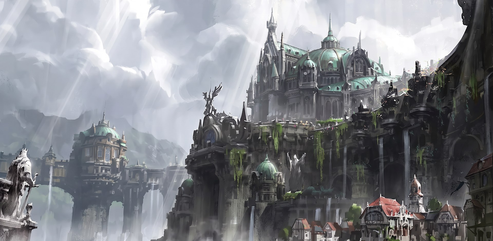
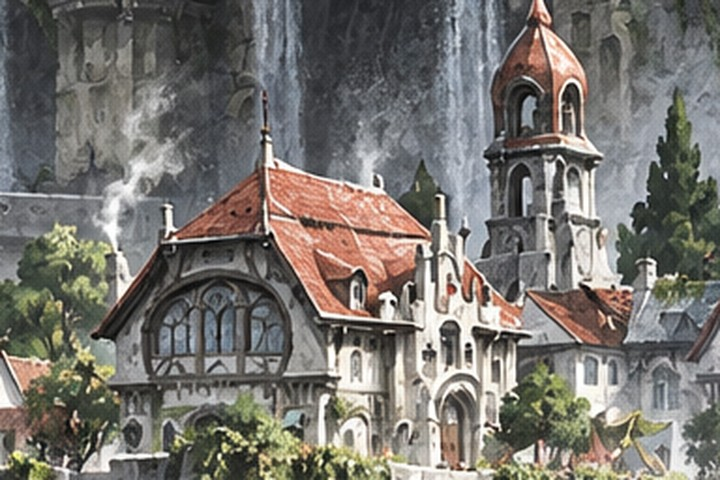
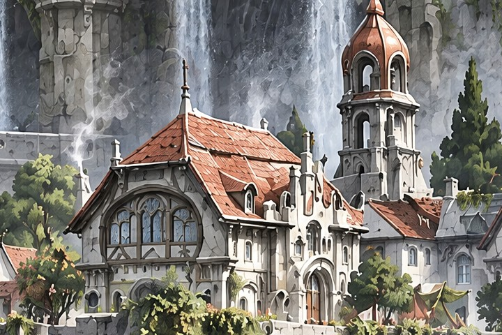
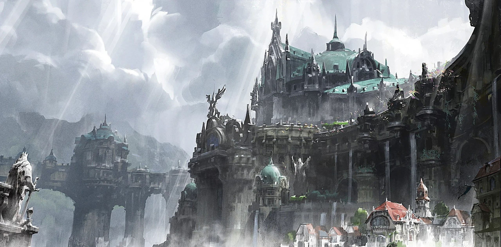

초기 설정 스케치와 2012년 러프 단계에서 중단된 도시 컨셉. 2026년 같은 구도로 AI 디테일 완성 후 직접 리터치로 마감.
기란 대도시 레벨 구성 시안. 도시 입장 동선, 조감 배치, 전경 초안을 한 장에 정리. 메모는 당시 그대로.

저각 구도와 조감 구도 두 장을 러프 단계에서 중단. 이번 완성 대상은 러프 A.

러프 A를 입력해 서로 다른 이미지 생성 AI 두 개로 디테일 작업. 조건은 구도, 실루엣, 팔레트 유지.

선택안을 입력으로 같은 구도의 4K 업스케일 작업. 해상도는 2048px에서 3840px로 상승. 아래는 같은 영역을 같은 크기로 확대한 비교.


4K 출력 위에 직접 리터치로 마감. 아래는 2012년 러프와 최종본 비교. 그림 위를 좌우로 끌어 전후 확인.
